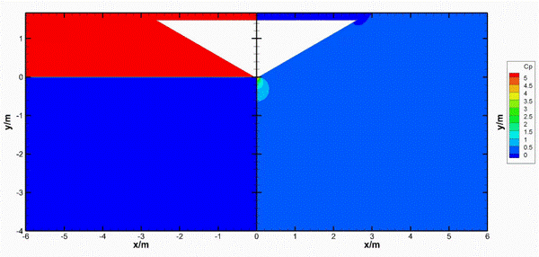

A general solution for the water entry of an arbitrary curved wedge

Abstract
The present study proposes a general solution for the water entry of an arbitrary curved wedge with a constant speed. The solution is based on the assumption that the impact flow is an incompressible potential flow with negligible effects of gravity and surface tension. The slamming and transition stages of the water entry of the curved wedge are addressed theoretically. For the slamming stage, pressure and hydrodynamic force models are derived from a quasi self-similar assumption based on the wetted length and a similarity solution of the water entry of linear wedges. The solution can be applied to the water entry of linear and curved wedges, where the curvature effects are absorbed into the wetted length and the derivative of the wetted length with respect to the penetration depth. For the transition stage, where a fixed separation point of flow detachment is located at the knuckle of the wedge, a hydrodynamic force model is proposed by extending the transition stage model of the water entry of linear wedges to that of curved wedges. The present solution can quickly predict the pressure distributions and hydrodynamic forces for the water entry of curved wedges. The predictions are in good agreement with the experimental and numerical results for the slamming and transition stages.
Read the published article ↗